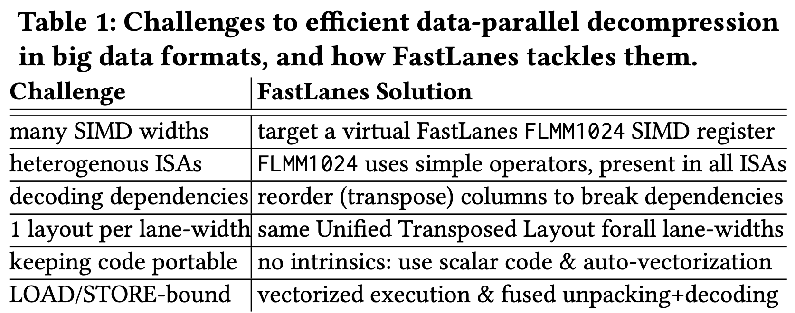

<!DOCTYPE html>
<html><head><title>(논문) The FastLanes Compression Layout - Decoding 100 Billion Integers per Second with Scalar Code, VLDB 2023 (1. Introduction)</title><meta charSet="utf-8"/><meta name="viewport" content="width=device-width, initial-scale=1.0"/><meta property="og:title" content="(논문) The FastLanes Compression Layout - Decoding 100 Billion Integers per Second with Scalar Code, VLDB 2023 (1. Introduction)"/><meta property="og:description" content="본 글은 논문 The FastLanes Compression Layout: Decoding &amp;gt; 100 Billion Integers per Second with Scalar Code (VLDB &amp;#039;23) 를 읽고 정리한 글입니다. 별도의 명시가 없는 한, 본 글의 모든 그림은 위 논문에서 가져왔습니다."/><meta property="og:image" content="https://mdg.haeramk.im/static/og-image.png"/><meta property="og:width" content="1200"/><meta property="og:height" content="675"/><link rel="icon" href="../../../../../../static/icon.png"/><meta name="description" content="본 글은 논문 The FastLanes Compression Layout: Decoding &amp;gt; 100 Billion Integers per Second with Scalar Code (VLDB &amp;#039;23) 를 읽고 정리한 글입니다. 별도의 명시가 없는 한, 본 글의 모든 그림은 위 논문에서 가져왔습니다."/><meta name="generator" content="Quartz"/><link rel="preconnect" href="https://fonts.googleapis.com"/><link rel="preconnect" href="https://fonts.gstatic.com"/><link href="../../../../../../index.css" rel="stylesheet" type="text/css" spa-preserve/><link href="https://cdn.jsdelivr.net/npm/katex@0.16.0/dist/katex.min.css" rel="stylesheet" type="text/css" spa-preserve/><link href="https://fonts.googleapis.com/css2?family=IBM Plex Mono&amp;family=Gowun Batang:wght@400;700&amp;family=Gowun Dodum:ital,wght@0,400;0,600;1,400;1,600&amp;display=swap" rel="stylesheet" type="text/css" spa-preserve/><script src="../../../../../../prescript.js" type="application/javascript" spa-preserve></script><script type="application/javascript" spa-preserve>const fetchData = fetch(`../../../../../../static/contentIndex.json`).then(data => data.json())</script></head><body data-slug="gardens/database/encoding/papers/fastlanes.2023.pvldb.vldb.org/full/1.-Introduction-(FastLanes,-VLDB-23)"><div id="quartz-root" class="page"><div id="quartz-body"><div class="left sidebar"><h1 class="page-title "><a href="../../../../../..">Madison Digital Garden</a></h1><div class="spacer mobile-only"></div><div class="search "><div id="search-icon"><p>Search</p><div></div><svg tabIndex="0" aria-labelledby="title desc" role="img" xmlns="http://www.w3.org/2000/svg" viewBox="0 0 19.9 19.7"><title id="title">Search</title><desc id="desc">Search</desc><g class="search-path" fill="none"><path stroke-linecap="square" d="M18.5 18.3l-5.4-5.4"></path><circle cx="8" cy="8" r="7"></circle></g></svg></div><div id="search-container"><div id="search-space"><input autocomplete="off" id="search-bar" name="search" type="text" aria-label="Search for something" placeholder="Search for something"/><div id="results-container"></div></div></div></div><div class="darkmode "><input class="toggle" id="darkmode-toggle" type="checkbox" tabIndex="-1"/><label id="toggle-label-light" for="darkmode-toggle" tabIndex="-1"><svg xmlns="http://www.w3.org/2000/svg" xmlnsXlink="http://www.w3.org/1999/xlink" version="1.1" id="dayIcon" x="0px" y="0px" viewBox="0 0 35 35" style="enable-background:new 0 0 35 35;" xmlSpace="preserve"><title>Light mode</title><path d="M6,17.5C6,16.672,5.328,16,4.5,16h-3C0.672,16,0,16.672,0,17.5    S0.672,19,1.5,19h3C5.328,19,6,18.328,6,17.5z M7.5,26c-0.414,0-0.789,0.168-1.061,0.439l-2,2C4.168,28.711,4,29.086,4,29.5    C4,30.328,4.671,31,5.5,31c0.414,0,0.789-0.168,1.06-0.44l2-2C8.832,28.289,9,27.914,9,27.5C9,26.672,8.329,26,7.5,26z M17.5,6    C18.329,6,19,5.328,19,4.5v-3C19,0.672,18.329,0,17.5,0S16,0.672,16,1.5v3C16,5.328,16.671,6,17.5,6z M27.5,9    c0.414,0,0.789-0.168,1.06-0.439l2-2C30.832,6.289,31,5.914,31,5.5C31,4.672,30.329,4,29.5,4c-0.414,0-0.789,0.168-1.061,0.44    l-2,2C26.168,6.711,26,7.086,26,7.5C26,8.328,26.671,9,27.5,9z M6.439,8.561C6.711,8.832,7.086,9,7.5,9C8.328,9,9,8.328,9,7.5    c0-0.414-0.168-0.789-0.439-1.061l-2-2C6.289,4.168,5.914,4,5.5,4C4.672,4,4,4.672,4,5.5c0,0.414,0.168,0.789,0.439,1.06    L6.439,8.561z M33.5,16h-3c-0.828,0-1.5,0.672-1.5,1.5s0.672,1.5,1.5,1.5h3c0.828,0,1.5-0.672,1.5-1.5S34.328,16,33.5,16z     M28.561,26.439C28.289,26.168,27.914,26,27.5,26c-0.828,0-1.5,0.672-1.5,1.5c0,0.414,0.168,0.789,0.439,1.06l2,2    C28.711,30.832,29.086,31,29.5,31c0.828,0,1.5-0.672,1.5-1.5c0-0.414-0.168-0.789-0.439-1.061L28.561,26.439z M17.5,29    c-0.829,0-1.5,0.672-1.5,1.5v3c0,0.828,0.671,1.5,1.5,1.5s1.5-0.672,1.5-1.5v-3C19,29.672,18.329,29,17.5,29z M17.5,7    C11.71,7,7,11.71,7,17.5S11.71,28,17.5,28S28,23.29,28,17.5S23.29,7,17.5,7z M17.5,25c-4.136,0-7.5-3.364-7.5-7.5    c0-4.136,3.364-7.5,7.5-7.5c4.136,0,7.5,3.364,7.5,7.5C25,21.636,21.636,25,17.5,25z"></path></svg></label><label id="toggle-label-dark" for="darkmode-toggle" tabIndex="-1"><svg xmlns="http://www.w3.org/2000/svg" xmlnsXlink="http://www.w3.org/1999/xlink" version="1.1" id="nightIcon" x="0px" y="0px" viewBox="0 0 100 100" style="enable-background='new 0 0 100 100'" xmlSpace="preserve"><title>Dark mode</title><path d="M96.76,66.458c-0.853-0.852-2.15-1.064-3.23-0.534c-6.063,2.991-12.858,4.571-19.655,4.571  C62.022,70.495,50.88,65.88,42.5,57.5C29.043,44.043,25.658,23.536,34.076,6.47c0.532-1.08,0.318-2.379-0.534-3.23  c-0.851-0.852-2.15-1.064-3.23-0.534c-4.918,2.427-9.375,5.619-13.246,9.491c-9.447,9.447-14.65,22.008-14.65,35.369  c0,13.36,5.203,25.921,14.65,35.368s22.008,14.65,35.368,14.65c13.361,0,25.921-5.203,35.369-14.65  c3.872-3.871,7.064-8.328,9.491-13.246C97.826,68.608,97.611,67.309,96.76,66.458z"></path></svg></label></div></div><div class="center"><div class="page-header"><div class="popover-hint"><h1 class="article-title ">(논문) The FastLanes Compression Layout - Decoding 100 Billion Integers per Second with Scalar Code, VLDB 2023 (1. Introduction)</h1><p class="content-meta ">Aug 24, 2024, 16 min read</p><ul class="tags "><li><a href="../../../../../../tags/database" class="internal tag-link">#database</a></li><li><a href="../../../../../../tags/db-encoding" class="internal tag-link">#db-encoding</a></li></ul></div></div><article class="popover-hint"><blockquote class="callout" data-callout="info">
<div class="callout-title">
                  <div class="callout-icon"><svg xmlns="http://www.w3.org/2000/svg" width="100%" height="100%" viewBox="0 0 24 24" fill="none" stroke="currentColor" stroke-width="2" stroke-linecap="round" stroke-linejoin="round"><circle cx="12" cy="12" r="10"></circle><line x1="12" y1="16" x2="12" y2="12"></line><line x1="12" y1="8" x2="12.01" y2="8"></line></svg></div>
                  <div class="callout-title-inner"><p>본 글은 논문 <a href="https://dl.acm.org/doi/10.14778/3598581.3598587" class="external">The FastLanes Compression Layout: Decoding > 100 Billion Integers per Second with Scalar Code (VLDB '23)</a> 를 읽고 정리한 글입니다.</p></div>
                  
                </div>
</blockquote>
<blockquote class="callout" data-callout="info">
<div class="callout-title">
                  <div class="callout-icon"><svg xmlns="http://www.w3.org/2000/svg" width="100%" height="100%" viewBox="0 0 24 24" fill="none" stroke="currentColor" stroke-width="2" stroke-linecap="round" stroke-linejoin="round"><circle cx="12" cy="12" r="10"></circle><line x1="12" y1="16" x2="12" y2="12"></line><line x1="12" y1="8" x2="12.01" y2="8"></line></svg></div>
                  <div class="callout-title-inner"><p>별도의 명시가 없는 한, 본 글의 모든 그림은 위 논문에서 가져왔습니다. </p></div>
                  
                </div>
</blockquote>
<blockquote class="callout is-collapsible is-collapsed" data-callout="info" data-callout-fold>
<div class="callout-title">
                  <div class="callout-icon"><svg xmlns="http://www.w3.org/2000/svg" width="100%" height="100%" viewBox="0 0 24 24" fill="none" stroke="currentColor" stroke-width="2" stroke-linecap="round" stroke-linejoin="round"><circle cx="12" cy="12" r="10"></circle><line x1="12" y1="16" x2="12" y2="12"></line><line x1="12" y1="8" x2="12.01" y2="8"></line></svg></div>
                  <div class="callout-title-inner"><p>목차 </p></div>
                  <svg xmlns="http://www.w3.org/2000/svg" width="24" height="24" viewBox="0 0 24 24" fill="none" stroke="currentColor" stroke-width="2" stroke-linecap="round" stroke-linejoin="round" class="fold">
                  <polyline points="6 9 12 15 18 9"></polyline>
                </svg>
                </div>
<ul>
<li><a href="../../../../../../gardens/database/encoding/papers/fastlanes.2023.pvldb.vldb.org/full/1.-Introduction-(FastLanes,-VLDB-23)" class="internal" data-slug="gardens/database/encoding/papers/fastlanes.2023.pvldb.vldb.org/full/1.-Introduction-(FastLanes,-VLDB-23)">1. Introduction (현재 글)</a></li>
<li><a href="../../../../../../gardens/database/encoding/papers/fastlanes.2023.pvldb.vldb.org/full/2.-FastLanes-(FastLanes,-VLDB-23)" class="internal" data-slug="gardens/database/encoding/papers/fastlanes.2023.pvldb.vldb.org/full/2.-FastLanes-(FastLanes,-VLDB-23)">2. FastLanes</a></li>
<li><a href="../../../../../../gardens/database/encoding/papers/fastlanes.2023.pvldb.vldb.org/full/3.-Evaluation-(FastLanes,-VLDB-23)" class="internal" data-slug="gardens/database/encoding/papers/fastlanes.2023.pvldb.vldb.org/full/3.-Evaluation-(FastLanes,-VLDB-23)">3. Evaluation</a></li>
<li><a href="../../../../../../gardens/database/encoding/papers/fastlanes.2023.pvldb.vldb.org/full/4.-Related-Work-(FastLanes,-VLDB-23)" class="internal" data-slug="gardens/database/encoding/papers/fastlanes.2023.pvldb.vldb.org/full/4.-Related-Work-(FastLanes,-VLDB-23)">4. Related Work</a></li>
<li><a href="../../../../../../gardens/database/encoding/papers/fastlanes.2023.pvldb.vldb.org/full/5.-Conclusion-and-Future-Work-(FastLanes,-VLDB-23)" class="internal" data-slug="gardens/database/encoding/papers/fastlanes.2023.pvldb.vldb.org/full/5.-Conclusion-and-Future-Work-(FastLanes,-VLDB-23)">5. Conclusion and Future Work</a></li>
</ul>
</blockquote>
<h2 id="1-instruction">1. Instruction<a aria-hidden="true" tabindex="-1" href="#1-instruction" class="internal"> §</a></h2>
<h3 id="10-overview">1.0. Overview<a aria-hidden="true" tabindex="-1" href="#10-overview" class="internal"> §</a></h3>
<ul>
<li><a href="../../../../../../gardens/database/modern/terms/On-Line-Analytical-Processing,-OLAP-(Modern-Database)" class="internal" data-slug="gardens/database/modern/terms/On-Line-Analytical-Processing,-OLAP-(Modern-Database)">OLAP</a> 과 같은 시스템에서는 보통 columnar data format 을 많이 이용한다. 그 이유는:
<ul>
<li>Row data 를 load 하면 불필요한 column 까지 load 되기 때문</li>
<li>Columnar data 는 compression 이 용이해 보통 데이터의 크기가 더 작기 때문</li>
</ul>
</li>
</ul>
<h4 id="101-vectorized-execution">1.0.1. Vectorized execution<a aria-hidden="true" tabindex="-1" href="#101-vectorized-execution" class="internal"> §</a></h4>
<ul>
<li><em>Chunk</em> (<em>Vector</em>) 단위로 query execution 을 처리하는 것을 의미한다.
<ul>
<li>여기서 <em>Chunk</em> (<em>Vector</em>) 는 하나의 데이터 (single row) 가 아닌 여러개의 데이터 (multiple rows) 를 의미한다.</li>
<li>보통 1024 개를 묶어 하나의 vector 라고 한다.</li>
</ul>
</li>
<li>가령 loop 을 돌며 어떤 작업 (func) 을 하는 다음의 코드는,</li>
</ul>
<div data-rehype-pretty-code-fragment><pre style="background-color:var(--shiki-color-background);" tabindex="0" data-language="c" data-theme="default"><code data-language="c" data-theme="default"><span data-line><span style="color:var(--shiki-token-keyword);">int</span><span style="color:var(--shiki-color-text);"> arr[MAX];</span></span>
<span data-line> </span>
<span data-line><span style="color:var(--shiki-token-keyword);">void</span><span style="color:var(--shiki-color-text);"> </span><span style="color:var(--shiki-token-function);">func</span><span style="color:var(--shiki-color-text);">(</span><span style="color:var(--shiki-token-keyword);">int</span><span style="color:var(--shiki-color-text);"> i) {</span></span>
<span data-line><span style="color:var(--shiki-color-text);">	</span><span style="color:var(--shiki-token-comment);">// do something...</span></span>
<span data-line><span style="color:var(--shiki-color-text);">}</span></span>
<span data-line> </span>
<span data-line><span style="color:var(--shiki-token-keyword);">for</span><span style="color:var(--shiki-color-text);"> (</span><span style="color:var(--shiki-token-keyword);">int</span><span style="color:var(--shiki-color-text);"> i </span><span style="color:var(--shiki-token-keyword);">=</span><span style="color:var(--shiki-color-text);"> </span><span style="color:var(--shiki-token-constant);">0</span><span style="color:var(--shiki-color-text);">; i </span><span style="color:var(--shiki-token-keyword);">&lt;</span><span style="color:var(--shiki-color-text);"> MAX; i</span><span style="color:var(--shiki-token-keyword);">++</span><span style="color:var(--shiki-color-text);">){</span></span>
<span data-line><span style="color:var(--shiki-color-text);">	</span><span style="color:var(--shiki-token-function);">func(arr[i])</span><span style="color:var(--shiki-color-text);">;</span></span>
<span data-line><span style="color:var(--shiki-color-text);">}</span></span></code></pre></div>
<ul>
<li>이것 대신</li>
</ul>
<div data-rehype-pretty-code-fragment><pre style="background-color:var(--shiki-color-background);" tabindex="0" data-language="c" data-theme="default"><code data-language="c" data-theme="default"><span data-line><span style="color:var(--shiki-token-keyword);">int</span><span style="color:var(--shiki-color-text);"> arr[MAX];</span></span>
<span data-line> </span>
<span data-line><span style="color:var(--shiki-token-keyword);">void</span><span style="color:var(--shiki-color-text);"> </span><span style="color:var(--shiki-token-function);">func</span><span style="color:var(--shiki-color-text);">(</span><span style="color:var(--shiki-token-keyword);">int*</span><span style="color:var(--shiki-color-text);"> vec</span><span style="color:var(--shiki-token-punctuation);">,</span><span style="color:var(--shiki-color-text);"> </span><span style="color:var(--shiki-token-keyword);">int</span><span style="color:var(--shiki-color-text);"> begin) {</span></span>
<span data-line><span style="color:var(--shiki-color-text);">	</span><span style="color:var(--shiki-token-keyword);">for</span><span style="color:var(--shiki-color-text);"> (</span><span style="color:var(--shiki-token-keyword);">int</span><span style="color:var(--shiki-color-text);"> i </span><span style="color:var(--shiki-token-keyword);">=</span><span style="color:var(--shiki-color-text);"> begin; i </span><span style="color:var(--shiki-token-keyword);">&lt;</span><span style="color:var(--shiki-color-text);"> begin </span><span style="color:var(--shiki-token-keyword);">+</span><span style="color:var(--shiki-color-text);"> </span><span style="color:var(--shiki-token-constant);">1024</span><span style="color:var(--shiki-color-text);">; i</span><span style="color:var(--shiki-token-keyword);">++</span><span style="color:var(--shiki-color-text);">) {</span></span>
<span data-line><span style="color:var(--shiki-color-text);">		</span><span style="color:var(--shiki-token-comment);">// do something...</span></span>
<span data-line><span style="color:var(--shiki-color-text);">	}</span></span>
<span data-line><span style="color:var(--shiki-color-text);">}</span></span>
<span data-line> </span>
<span data-line><span style="color:var(--shiki-token-keyword);">for</span><span style="color:var(--shiki-color-text);"> (</span><span style="color:var(--shiki-token-keyword);">int</span><span style="color:var(--shiki-color-text);"> i </span><span style="color:var(--shiki-token-keyword);">=</span><span style="color:var(--shiki-color-text);"> </span><span style="color:var(--shiki-token-constant);">0</span><span style="color:var(--shiki-color-text);">; i </span><span style="color:var(--shiki-token-keyword);">&lt;</span><span style="color:var(--shiki-color-text);"> MAX; i </span><span style="color:var(--shiki-token-keyword);">+=</span><span style="color:var(--shiki-color-text);"> </span><span style="color:var(--shiki-token-constant);">1024</span><span style="color:var(--shiki-color-text);">) {</span></span>
<span data-line><span style="color:var(--shiki-color-text);">	</span><span style="color:var(--shiki-token-function);">func(arr</span><span style="color:var(--shiki-token-punctuation);">,</span><span style="color:var(--shiki-token-function);"> i)</span><span style="color:var(--shiki-color-text);">;</span></span>
<span data-line><span style="color:var(--shiki-color-text);">}</span></span></code></pre></div>
<ul>
<li>이렇게 하는 방식이다.</li>
<li>위 두 방식은 동일하지만, vectorized execution 하는 것이 더 좋다. 왜냐면:
<ul>
<li>일단 function call 이 적어지기 때문에 function call overhead 를 줄일 수 있고,</li>
<li>최적화하기도 좋다.
<ul>
<li>Function 내에서의 loop 횟수가 정해져있고 <sup><a href="#user-content-fn-vectorized-execution" id="user-content-fnref-vectorized-execution" data-footnote-ref aria-describedby="footnote-label" class="internal">1</a></sup></li>
<li>단순 작업을 looping 하는 것이 해당 함수의 전부이기 때문에 <a href="../../../../../../gardens/arch/terms/Single-Instruction-Multiple-Data,-SIMD-(Arch)" class="internal" data-slug="gardens/arch/terms/Single-Instruction-Multiple-Data,-SIMD-(Arch)">SIMD</a> 를 사용하기에도 용이하다.</li>
</ul>
</li>
</ul>
</li>
</ul>
<h4 id="102-vectorized-decoding">1.0.2. Vectorized decoding<a aria-hidden="true" tabindex="-1" href="#102-vectorized-decoding" class="internal"> §</a></h4>
<ul>
<li>위와 같은 <a href="#101-vectorized-execution" class="internal">vectorized execution</a> 은 decompression 에도 적용하여 이점을 볼 수 있다. (즉, <em>Vectorized decoding</em>)</li>
<li>또한 uncompressed 상태의 vector 크기를 L1 혹은 L2 캐시에 맞춘다면 decompression 이후 memory 에 저장하지 않고 캐시에서 바로 가져다가 query execution 을 할 수 있으므로 memory 에는 compressed vector 만 저장되게 되어 memory 사용량 또한 줄일 수 있다.</li>
</ul>
<h4 id="103-parquet">1.0.3. Parquet<a aria-hidden="true" tabindex="-1" href="#103-parquet" class="internal"> §</a></h4>
<ul>
<li>Parquet 에서는 무조건 <a href="../../../../../../gardens/database/encoding/terms/Dictionary-Encoding-(Encoding)" class="internal" data-slug="gardens/database/encoding/terms/Dictionary-Encoding-(Encoding)">DICT</a> 를 적용하고, 이렇게 해서 생성된 code sequence 에 대해서는 <a href="../../../../../../gardens/database/encoding/terms/Run-Length-Encoding,-RLE-(Encoding)" class="internal" data-slug="gardens/database/encoding/terms/Run-Length-Encoding,-RLE-(Encoding)">RLE</a> 나 <a href="../../../../../../gardens/database/encoding/terms/Bit-Packing,-BP-(Encoding)" class="internal" data-slug="gardens/database/encoding/terms/Bit-Packing,-BP-(Encoding)">BP</a> 를 적용한다.</li>
<li>하지만 이때 <a href="../../../../../../gardens/database/encoding/terms/Run-Length-Encoding,-RLE-(Encoding)" class="internal" data-slug="gardens/database/encoding/terms/Run-Length-Encoding,-RLE-(Encoding)">RLE</a> 나 <a href="../../../../../../gardens/database/encoding/terms/Bit-Packing,-BP-(Encoding)" class="internal" data-slug="gardens/database/encoding/terms/Bit-Packing,-BP-(Encoding)">BP</a> 는 데이터의 사이즈가 가변적 <sup><a href="#user-content-fn-variable-sized" id="user-content-fnref-variable-sized" data-footnote-ref aria-describedby="footnote-label" class="internal">2</a></sup> 이고,</li>
</ul>
<h4 id="104-compressed-execution">1.0.4. Compressed execution<a aria-hidden="true" tabindex="-1" href="#104-compressed-execution" class="internal"> §</a></h4>
<ul>
<li><em>Compressed Query Execution</em> 은 데이터가 compressed 된 상태에서 그것을 decompression 하지 않고 (혹은 processing 가능한 최소의 크기로만 부분적으로 decompression 하여) query processing 을 하는 것을 일컫는다.
<ul>
<li>“부분적” 이라는 것은 가령 8bit 로 compressed 된 데이터가 원래는 64bit 로 decompression 되어야 하지만 16bit 로만 decompression 해도 processing 이 가능하다면 그렇게 하는 것이라 생각하면 된다.</li>
</ul>
</li>
<li>DuckDB 와 같은 근래의 DBMS 들은 이러한 <em>compressed vector</em> (random access 가 가능한 compressed data) 를 지원한다.
<ul>
<li>가령 <a href="../../../../../../gardens/database/encoding/terms/Frame-Of-Reference,-FOR-(Encoding)" class="internal" data-slug="gardens/database/encoding/terms/Frame-Of-Reference,-FOR-(Encoding)">FOR</a>-vector 의 경우 vector 의 1024 개의 value 들은 <code>uint8</code> 로 compression 되어 있고, 마지막에 base 를 위한 <code>uint64</code> 값 하나만 더 추가하는 식으로 구현할 수 있다.</li>
<li>마찬가지로 <a href="../../../../../../gardens/database/encoding/terms/Dictionary-Encoding-(Encoding)" class="internal" data-slug="gardens/database/encoding/terms/Dictionary-Encoding-(Encoding)">DICT</a>-vector 의 경우 각 code 는 <code>uint8</code> 이되 dictionary 를 가리키는 pointer 하나만 <code>uint64</code> 로서 구현할 수 있다.</li>
</ul>
</li>
<li>이렇게 함으로써 <a href="../../../../../../gardens/arch/terms/Single-Instruction-Multiple-Data,-SIMD-(Arch)" class="internal" data-slug="gardens/arch/terms/Single-Instruction-Multiple-Data,-SIMD-(Arch)">SIMD</a> 와 같은 optimization 도 사용할 수 있게 되었고, (<a href="../../../../../../gardens/arch/terms/Single-Instruction-Multiple-Data,-SIMD-(Arch)" class="internal" data-slug="gardens/arch/terms/Single-Instruction-Multiple-Data,-SIMD-(Arch)">SIMD</a> 에서는 작은 사이즈 데이터 여러개를 레지스터에 넣으니깐은) 캐시나 메모리 사용량도 더 줄일 수 있게 되었다.</li>
<li>또한 compressed vector 를 “부분적으로” decompress 하여 가능한 최소 사이즈의 lane-width (processing size 라고 이해하자) 가 되게 하는 best-case scan decoding 을 best-case 를 넘어 common-case 가 되게 했다고 한다.</li>
</ul>
<h4 id="105-fastlanes">1.0.5. FastLanes<a aria-hidden="true" tabindex="-1" href="#105-fastlanes" class="internal"> §</a></h4>
<ul>
<li><em>FastLanes</em> 는 (저자의 소속인) <a href="https://cwi.nl/en/" class="external">CWI</a> 에서 시작한 next-generation bigdata format 이다.</li>
<li>이것은 parallel processing 의 기회를 최대한 늘린 columnar compression layout 으로,
<ul>
<li>다양한 <em>Instruction Set Architecture</em> (<em>ISA</em>) 에 대응할 수 있고,
<ul>
<li>즉, 특정 architecture 에 의존적이지 않고 공통적으로 지원하는 instruction 에만 의존하고</li>
</ul>
</li>
<li>Scalar-only code 를 사용하여 vectorized execution 을 사용하지 않고도 효과적 <sup><a href="#user-content-fn-technical-dept" id="user-content-fnref-technical-dept" data-footnote-ref aria-describedby="footnote-label" class="internal">3</a></sup> 이다.</li>
</ul>
</li>
</ul>
<h3 id="11-challenges-and-contributions">1.1. Challenges and Contributions<a aria-hidden="true" tabindex="-1" href="#11-challenges-and-contributions" class="internal"> §</a></h3>
<ul>
<li><em>FastLanes</em> 의 핵심은 데이터의 의존성을 최대한 줄여 parallel processing 을 최대로 활용할 수 있게 한다는 것에 있다. 이때 당면한 문제들 (Challeges) 와 그에 대한 해결 방법 (Contribution) 들을 알아보자.</li>
<li>요약하자면:</li>
</ul>
<p></p>


<table><thead><tr><th>CHALLENGE</th><th>CONTRIBUTION</th></tr></thead><tbody><tr><td>SIMD register 크기가 다양함</td><td>1024bit 크기의 가상 register <code>FLMM1024</code> 를 가정</td></tr><tr><td>다양한 SIMD ISA 가 있음</td><td>모든 SIMD ISA 가 공통적으로 제공하는 instruction 들로 <code>FLMM1024</code> 에 대한 instruction 을 정의</td></tr><tr><td>(DELTA) 데이터 간의 의존성이 있음</td><td><em>Transposing</em>: column 내 데이터들의 순서를 바꿔 이런 의존성을 무력화함</td></tr><tr><td>기존의 scheme 들은 특정 lane-width 에만 효과적임</td><td><em>Unified Transposed Layout</em>: 모든 lane-width 에 적용할 수 있는 scheme</td></tr><tr><td>Code portability: 특정 ISA 에서만 사용할 수 있는 코드여서는 안됨</td><td>Scalar code 를 작성, vectorization 은 intrinsic 을 사용하는 것이 아닌 compiler 에게 맡기는 방식</td></tr><tr><td>LOAD, STORE bound</td><td>Memory 에는 compressed data 만 유지, cache 에 들어갈 정도의 크기까지만 decompress 하여 cache 된 데이터가 바로 execition 될 수 있도록 함 (reduce LOAD-bound) + BP fusing 으로 STORE-bound 해결</td></tr></tbody></table>
<h4 id="111-many-simd-widths">1.1.1. Many SIMD widths<a aria-hidden="true" tabindex="-1" href="#111-many-simd-widths" class="internal"> §</a></h4>
<ul>
<li>지난 25년동안 <a href="../../../../../../gardens/arch/terms/Single-Instruction-Multiple-Data,-SIMD-(Arch)" class="internal" data-slug="gardens/arch/terms/Single-Instruction-Multiple-Data,-SIMD-(Arch)">SIMD</a> 레지스터 크기는 8배나 증가했다. 이에 따라 현 시점에서 가장 큰 사이즈의 <a href="../../../../../../gardens/arch/terms/Single-Instruction-Multiple-Data,-SIMD-(Arch)" class="internal" data-slug="gardens/arch/terms/Single-Instruction-Multiple-Data,-SIMD-(Arch)">SIMD</a> 레지스터 크기에 맞추는 것이 아닌, 추후에 더 증가할 것이라는 예측에 따라 1024bit 의 가상 <a href="../../../../../../gardens/arch/terms/Single-Instruction-Multiple-Data,-SIMD-(Arch)" class="internal" data-slug="gardens/arch/terms/Single-Instruction-Multiple-Data,-SIMD-(Arch)">SIMD</a> 레지스터 <code>FLMM1024</code> 를 사용하여 FastLanes 를 설계했다고 한다.
<ul>
<li>이건 기존의 어떤 ISA 보다도 성능이 좋고, scalar code 보다도 좋다고 한다. <sup><a href="#user-content-fn-best-performance" id="user-content-fnref-best-performance" data-footnote-ref aria-describedby="footnote-label" class="internal">4</a></sup></li>
</ul>
</li>
<li>Bit 레벨에서는, <a href="../../../../../../gardens/database/encoding/terms/Bit-Packing,-BP-(Encoding)" class="internal" data-slug="gardens/database/encoding/terms/Bit-Packing,-BP-(Encoding)">BP</a> 를 <em>interleaving</em> 해서 128 개의 8bit lane (즉, 총 1024bit) 에 맞춘다고 한다.
<ul>
<li>가령 3bit value 들을 8bit lane 에 round robin 으로 할당하는거지</li>
</ul>
</li>
<li>Implementation 레벨에서는, 1024-value vector 를 한꺼번에 처리 <sup><a href="#user-content-fn-tuples-at-a-time" id="user-content-fnref-tuples-at-a-time" data-footnote-ref aria-describedby="footnote-label" class="internal">5</a></sup> 하여 vector 하나 처리하는 데에 어떤 경우에는 17 cycle 만에도 가능했다고 한다.</li>
</ul>
<h4 id="112-heterogeneous-isas">1.1.2. Heterogeneous ISAs<a aria-hidden="true" tabindex="-1" href="#112-heterogeneous-isas" class="internal"> §</a></h4>
<ul>
<li><a href="../../../../../../gardens/arch/terms/Single-Instruction-Multiple-Data,-SIMD-(Arch)" class="internal" data-slug="gardens/arch/terms/Single-Instruction-Multiple-Data,-SIMD-(Arch)">SIMD</a> instruction 들은 ISA 마다도 다르지만, ISA 내에서도 generation 에 따라서도 다르다.
<ul>
<li>가령 x86 에서 SSE 와 AVX 가 다른것처럼</li>
</ul>
</li>
<li>따라서 이런 다양성을 무마하기 위해, <code>FLMM1024</code> 레지스터에 대한 간단한 instruction 또한 정의했다고 한다.
<ul>
<li>당연히 이 instruction 들은 다양한 ISA 들이 제공하는 instruction 들의 intersection 일것이다.</li>
</ul>
</li>
<li>본 논문에서는 자세하게 언급하지는 않았지만, <code>FLMM1024</code> instruction 들은 GPU 나 TPU 와 같은 다른 accelerator 들과의 호환 가능성도 제시한다.</li>
</ul>
<h4 id="113-decoding-dependencies">1.1.3. Decoding dependencies<a aria-hidden="true" tabindex="-1" href="#113-decoding-dependencies" class="internal"> §</a></h4>
<ul>
<li><a href="../../../../../../gardens/database/encoding/terms/Run-Length-Encoding,-RLE-(Encoding)" class="internal" data-slug="gardens/database/encoding/terms/Run-Length-Encoding,-RLE-(Encoding)">RLE</a> 는 <a href="../../../../../../gardens/arch/terms/Control-Dependence-(Arch)" class="internal" data-slug="gardens/arch/terms/Control-Dependence-(Arch)">control dependency</a> 가 있다.
<ul>
<li>이 control dependency 에 대해서는 딱히 어떤 해결책을 내놓지는 않는 것 같다.</li>
</ul>
</li>
<li>그리고 <a href="../../../../../../gardens/database/encoding/terms/Delta-Coding-(Encoding)" class="internal" data-slug="gardens/database/encoding/terms/Delta-Coding-(Encoding)">DELTA</a> 에게는 <a href="../../../../../../gardens/arch/terms/Data-Dependence-(Arch)" class="internal" data-slug="gardens/arch/terms/Data-Dependence-(Arch)">data dependency</a> 가 있다.
<ul>
<li><a href="../../../../../../gardens/database/encoding/terms/Delta-Coding-(Encoding)" class="internal" data-slug="gardens/database/encoding/terms/Delta-Coding-(Encoding)">DELTA</a> 의 경우에는 바로 이전의 값을 알아야 되기 때문.</li>
<li>근데 <a href="../../../../../../gardens/arch/terms/Single-Instruction-Multiple-Data,-SIMD-(Arch)" class="internal" data-slug="gardens/arch/terms/Single-Instruction-Multiple-Data,-SIMD-(Arch)">SIMD</a> 를 사용하게 되면 이 이전의 값이 바로 옆의 lane 에 위치하게 되는데</li>
<li>Lane-dependency (옆 lane 의 값을 가져다 사용하는 것) 의 경우에는 훨씬 더 오래걸리기 때문에 다른 격리방법을 사용해야 한다.</li>
</ul>
</li>
<li>FastLanes 에서는 column data 의 순서를 바꿔 data dependency 를 해결하는 <em>Transposing</em> 기법을 제시한다.</li>
<li>그리고 <a href="../../../../../../gardens/database/encoding/terms/Delta-Coding-(Encoding)" class="internal" data-slug="gardens/database/encoding/terms/Delta-Coding-(Encoding)">DELTA</a> 와 <a href="../../../../../../gardens/database/encoding/terms/Dictionary-Encoding-(Encoding)" class="internal" data-slug="gardens/database/encoding/terms/Dictionary-Encoding-(Encoding)">DICT</a> 의 조합에 <a href="../../../../../../gardens/database/encoding/terms/Run-Length-Encoding,-RLE-(Encoding)" class="internal" data-slug="gardens/database/encoding/terms/Run-Length-Encoding,-RLE-(Encoding)">RLE</a> 을 다시 매핑해서 훨씬 효율적인 <a href="../../../../../../gardens/database/encoding/terms/Delta-Coding-(Encoding)" class="internal" data-slug="gardens/database/encoding/terms/Delta-Coding-(Encoding)">DELTA</a> encoding 을 한다고 한다 <sup><a href="#user-content-fn-remap-rle" id="user-content-fnref-remap-rle" data-footnote-ref aria-describedby="footnote-label" class="internal">6</a></sup>.</li>
</ul>
<h4 id="114-layouts-that-depend-on-lane-width">1.1.4. Layouts that depend on lane-width<a aria-hidden="true" tabindex="-1" href="#114-layouts-that-depend-on-lane-width" class="internal"> §</a></h4>
<ul>
<li>기존의 연구들은 하나의 data stream (예를 들어 column 하나) 에 대한 encoding 만을 고려했고, 따라서 특정 lane width 에서만 최적의 성능을 보여줬다.</li>
<li>하지만 여러 column 들은 각기 다른 data distribution 을 가질 수 있기에, lane width 또한 다양해질 수 있다.
<ul>
<li><a href="../../../../../../gardens/database/encoding/terms/Bit-Packing,-BP-(Encoding)" class="internal" data-slug="gardens/database/encoding/terms/Bit-Packing,-BP-(Encoding)">BP</a> 의 bit width 가 다양할 수 있기 때문에</li>
</ul>
</li>
<li>따라서 가능한 모든 lane width 에 대응할 수 있는 방법이 필요하다.</li>
<li>또한 저자가 말하는 <em>Transposing</em> 을 사용할 때는 각 column 들의 순서가 달라질 수 있다.
<ul>
<li>단순하게 생각하면 column A 는 오름차순, column B 는 내림차순인 등</li>
<li>근데 이렇게되면 안되자나?</li>
</ul>
</li>
<li>그래서 위의 두 문제 <sup><a href="#user-content-fn-two-problem" id="user-content-fnref-two-problem" data-footnote-ref aria-describedby="footnote-label" class="internal">7</a></sup> (모든 가능한 lane width 에 대응 + column 들의 reordering 순서 통일) 를 해결하기 위한 것이 <em>Unified Transposed Layout</em> 이다.</li>
<li>여기서는 1024개의 값을 16개씩 8묶음으로 만들어서 0-4-2-6-1-5-3-7 순서로 나열한다.</li>
<li>이렇게 하는 것이 왜 문제를 해결하는지는 뒤에서 배운다.</li>
</ul>
<h4 id="115-keeping-code-portable">1.1.5. Keeping code portable<a aria-hidden="true" tabindex="-1" href="#115-keeping-code-portable" class="internal"> §</a></h4>
<ul>
<li>저자가 소개하는 <code>FLMM1024</code> instruction set 은 단순하게 설계되어있기 때문에 <code>uint64</code> 레지스터와 연산으로 저것들을 구현 (시뮬레이션?) 할 수 있다고 한다.</li>
<li>이러한 portability (특정 ISA 에 구애받지 않음) 는 SIMD 를 지원하지 않고 32bit 연산을 지원하는 매우 저사양의 CPU 에서도 FastLanes 를 사용했을 떄 성능 향상을 이뤄낼 수 있다고 한다.</li>
<li>일반적인 64bit ISA 에서는, SIMD 를 사용하지 않는 scalar code 의 경우에도 lane width 가 작을 때 SIMD 와 유사한 acceleration 이 일어났다고 한다.</li>
<li>즉, independency 를 늘려 SIMD 에 친화적으로 설계하는 것이 SIMD 를 사용하는 것 뿐만 아니라 사용하지 않았을 때에도 성능향상이 있었다고 한다.</li>
<li>또한 근래의 compiler 들은 optimizing 과정에서 SIMD 와 같은 vectorized execution 을 활용하게 되고, 따라서 FastLanes 는 별도의 SIMD intrinsic 을 사용하지 않아도 컴파일 과정에서 arch 가 지원하는 SIMD instruction 으로 컴파일된다 - 즉, high-level code 에는 특정 ISA 가 특정되어 있지 않기 때문에 그만큼 유연성을 가지는 것</li>
</ul>
<h4 id="116-avoid-getting-load-store-bound">1.1.6. Avoid getting LOAD, STORE bound<a aria-hidden="true" tabindex="-1" href="#116-avoid-getting-load-store-bound" class="internal"> §</a></h4>
<ul>
<li><em>FastLanes</em> 에서 compressed data 는 memory 에 들어오고, 그것을 decompression 한 것은 CPU 의 L1 캐시에도 들어갈 정도로 작기 때문에 바로 query execution 을 위한 pipeline 으로 진입할 수 있도록 설계되어 있다.</li>
<li>따라서 CPU-memory 간 traffic 을 compression ratio 만큼이나 줄일 수 있게 된다.</li>
<li>이에 따라 대부분의 CPU time 은 query execution 에 사용되기 때문에, CPU-memory 대역폭도 덜 사용할 수 있게 된다.</li>
<li>여기에 sequential scan 의 경우 prefetching 까지 결부되어 더욱 좋은 성능을 보여준다.</li>
<li>정리하자면, 이 모든것들은 결국 <code>LOAD</code> instruction 을 적게 사용하게 되어 부담을 줄이게 된다 (reduce LOAD-bound)</li>
<li>하지만 decoding 이 너무 빨라 연산의 결과를 다시 저장하는 (<code>STORE</code>) 것에 부담 (STORE-bound) 이 생기게 된다.</li>
<li>이를 위해 <a href="../../../../../../gardens/database/encoding/terms/Frame-Of-Reference,-FOR-(Encoding)" class="internal" data-slug="gardens/database/encoding/terms/Frame-Of-Reference,-FOR-(Encoding)">FOR</a>, <a href="../../../../../../gardens/database/encoding/terms/Delta-Coding-(Encoding)" class="internal" data-slug="gardens/database/encoding/terms/Delta-Coding-(Encoding)">DELTA</a>, <a href="../../../../../../gardens/database/encoding/terms/Run-Length-Encoding,-RLE-(Encoding)" class="internal" data-slug="gardens/database/encoding/terms/Run-Length-Encoding,-RLE-(Encoding)">RLE</a>, <a href="../../../../../../gardens/database/encoding/terms/Dictionary-Encoding-(Encoding)" class="internal" data-slug="gardens/database/encoding/terms/Dictionary-Encoding-(Encoding)">DICT</a> 에다가 <a href="../../../../../../gardens/database/encoding/terms/Bit-Packing,-BP-(Encoding)" class="internal" data-slug="gardens/database/encoding/terms/Bit-Packing,-BP-(Encoding)">BP</a> 를 fusing 하여 STORE+LOAD bound 를 줄였다고 한다 <sup><a href="#user-content-fn-store-load-bound" id="user-content-fnref-store-load-bound" data-footnote-ref aria-describedby="footnote-label" class="internal">8</a></sup>.</li>
</ul>
<h3 id="12-outline">1.2. Outline<a aria-hidden="true" tabindex="-1" href="#12-outline" class="internal"> §</a></h3>
<ul>
<li><a href="../../../../../../gardens/database/encoding/papers/fastlanes.2023.pvldb.vldb.org/full/2.-FastLanes-(FastLanes,-VLDB-23)" class="internal" data-slug="gardens/database/encoding/papers/fastlanes.2023.pvldb.vldb.org/full/2.-FastLanes-(FastLanes,-VLDB-23)">Section 2</a> 에서는 FastLanes 의 구체적인 logic 을 살펴본다. 다음의 세 파트로 이루어져 있다.
<ol>
<li>우선 1024-bit interleaved bit-packing</li>
<li><a href="../../../../../../gardens/database/encoding/terms/Delta-Coding-(Encoding)" class="internal" data-slug="gardens/database/encoding/terms/Delta-Coding-(Encoding)">DELTA</a> 의 dependency 를 깨기 위한 Unified Transposed Layout</li>
<li>위의 두 방법을 활용한 <a href="../../../../../../gardens/database/encoding/terms/Run-Length-Encoding,-RLE-(Encoding)" class="internal" data-slug="gardens/database/encoding/terms/Run-Length-Encoding,-RLE-(Encoding)">RLE</a> decoding</li>
</ol>
</li>
<li><a href="../../../../../../gardens/database/encoding/papers/fastlanes.2023.pvldb.vldb.org/full/3.-Evaluation-(FastLanes,-VLDB-23)" class="internal" data-slug="gardens/database/encoding/papers/fastlanes.2023.pvldb.vldb.org/full/3.-Evaluation-(FastLanes,-VLDB-23)">Section 3</a> 에서는 decompression performance evaluation 을 하며</li>
<li><a href="../../../../../../gardens/database/encoding/papers/fastlanes.2023.pvldb.vldb.org/full/4.-Related-Work-(FastLanes,-VLDB-23)" class="internal" data-slug="gardens/database/encoding/papers/fastlanes.2023.pvldb.vldb.org/full/4.-Related-Work-(FastLanes,-VLDB-23)">Section 4</a> 에서는 기존의 방법들과 FastLane 의 차이점에 대해 알아보고</li>
<li><a href="../../../../../../gardens/database/encoding/papers/fastlanes.2023.pvldb.vldb.org/full/5.-Conclusion-and-Future-Work-(FastLanes,-VLDB-23)" class="internal" data-slug="gardens/database/encoding/papers/fastlanes.2023.pvldb.vldb.org/full/5.-Conclusion-and-Future-Work-(FastLanes,-VLDB-23)">Section 5</a> 에서 마무리 짓는 형식이다.</li>
</ul>
<section data-footnotes class="footnotes"><h2 class="sr-only" id="footnote-label">Footnotes<a aria-hidden="true" tabindex="-1" href="#footnote-label" class="internal"> §</a></h2>
<ol>
<li id="user-content-fn-vectorized-execution">
<p>주인장의 추측이다. <a href="#user-content-fnref-vectorized-execution" data-footnote-backref class="data-footnote-backref internal" aria-label="Back to content">↩</a></p>
</li>
<li id="user-content-fn-variable-sized">
<p>여기서 variable sized 라는 것이 뭔지 잘 모르겠음; <a href="../../../../../../gardens/database/encoding/terms/Bit-Packing,-BP-(Encoding)" class="internal" data-slug="gardens/database/encoding/terms/Bit-Packing,-BP-(Encoding)">BP</a> 는 bit width 가 가변적이라고 받아들일 수 있는데 <a href="../../../../../../gardens/database/encoding/terms/Run-Length-Encoding,-RLE-(Encoding)" class="internal" data-slug="gardens/database/encoding/terms/Run-Length-Encoding,-RLE-(Encoding)">RLE</a> 는 뭐가 가변적이라는거고 <a href="#user-content-fnref-variable-sized" data-footnote-backref class="data-footnote-backref internal" aria-label="Back to content">↩</a></p>
</li>
<li id="user-content-fn-technical-dept">
<p>Vectorized execution 을 사용하지 않아도 좋다는 것이 맞는 해석인지 모르겠음. <a href="#user-content-fnref-technical-dept" data-footnote-backref class="data-footnote-backref internal" aria-label="Back to content">↩</a></p>
</li>
<li id="user-content-fn-best-performance">
<p>더 안좋은 것에 base 를 맞춰야 하는 것 아닌가? virtual 이 actual 보다 더 좋다면 actual performance 는 virtual 일때보다 evaluation 결과가 더 안좋을텐데 그럼 논리가 이상한데 <a href="#user-content-fnref-best-performance" data-footnote-backref class="data-footnote-backref internal" aria-label="Back to content">↩</a></p>
</li>
<li id="user-content-fn-tuples-at-a-time">
<p>아니 ㅅㅂ 뭐라는거야 128개의 8bit lane 이면 한번에 128 개씩 처리하는거 아닌가 <a href="#user-content-fnref-tuples-at-a-time" data-footnote-backref class="data-footnote-backref internal" aria-label="Back to content">↩</a></p>
</li>
<li id="user-content-fn-remap-rle">
<p>뭔소리임? <a href="#user-content-fnref-remap-rle" data-footnote-backref class="data-footnote-backref internal" aria-label="Back to content">↩</a></p>
</li>
<li id="user-content-fn-two-problem">
<p>원문에서는 이것이 별도의 문제가 아니고 하나의 흐름으로 연결되어 하나의 문제처럼 나온다. 근데 아직 감은 안온다. <a href="#user-content-fnref-two-problem" data-footnote-backref class="data-footnote-backref internal" aria-label="Back to content">↩</a></p>
</li>
<li id="user-content-fn-store-load-bound">
<p>아직 이게 뭔지는 모른다. <a href="#user-content-fnref-store-load-bound" data-footnote-backref class="data-footnote-backref internal" aria-label="Back to content">↩</a></p>
</li>
</ol>
</section></article></div><div class="right sidebar"><div class="graph "><h3>Graph View</h3><div class="graph-outer"><div id="graph-container" data-cfg="{&quot;drag&quot;:true,&quot;zoom&quot;:true,&quot;depth&quot;:1,&quot;scale&quot;:1.1,&quot;repelForce&quot;:0.5,&quot;centerForce&quot;:0.3,&quot;linkDistance&quot;:30,&quot;fontSize&quot;:0.6,&quot;opacityScale&quot;:1,&quot;showTags&quot;:true,&quot;removeTags&quot;:[]}"></div><svg version="1.1" id="global-graph-icon" xmlns="http://www.w3.org/2000/svg" xmlnsXlink="http://www.w3.org/1999/xlink" x="0px" y="0px" viewBox="0 0 55 55" fill="currentColor" xmlSpace="preserve"><path d="M49,0c-3.309,0-6,2.691-6,6c0,1.035,0.263,2.009,0.726,2.86l-9.829,9.829C32.542,17.634,30.846,17,29,17
	s-3.542,0.634-4.898,1.688l-7.669-7.669C16.785,10.424,17,9.74,17,9c0-2.206-1.794-4-4-4S9,6.794,9,9s1.794,4,4,4
	c0.74,0,1.424-0.215,2.019-0.567l7.669,7.669C21.634,21.458,21,23.154,21,25s0.634,3.542,1.688,4.897L10.024,42.562
	C8.958,41.595,7.549,41,6,41c-3.309,0-6,2.691-6,6s2.691,6,6,6s6-2.691,6-6c0-1.035-0.263-2.009-0.726-2.86l12.829-12.829
	c1.106,0.86,2.44,1.436,3.898,1.619v10.16c-2.833,0.478-5,2.942-5,5.91c0,3.309,2.691,6,6,6s6-2.691,6-6c0-2.967-2.167-5.431-5-5.91
	v-10.16c1.458-0.183,2.792-0.759,3.898-1.619l7.669,7.669C41.215,39.576,41,40.26,41,41c0,2.206,1.794,4,4,4s4-1.794,4-4
	s-1.794-4-4-4c-0.74,0-1.424,0.215-2.019,0.567l-7.669-7.669C36.366,28.542,37,26.846,37,25s-0.634-3.542-1.688-4.897l9.665-9.665
	C46.042,11.405,47.451,12,49,12c3.309,0,6-2.691,6-6S52.309,0,49,0z M11,9c0-1.103,0.897-2,2-2s2,0.897,2,2s-0.897,2-2,2
	S11,10.103,11,9z M6,51c-2.206,0-4-1.794-4-4s1.794-4,4-4s4,1.794,4,4S8.206,51,6,51z M33,49c0,2.206-1.794,4-4,4s-4-1.794-4-4
	s1.794-4,4-4S33,46.794,33,49z M29,31c-3.309,0-6-2.691-6-6s2.691-6,6-6s6,2.691,6,6S32.309,31,29,31z M47,41c0,1.103-0.897,2-2,2
	s-2-0.897-2-2s0.897-2,2-2S47,39.897,47,41z M49,10c-2.206,0-4-1.794-4-4s1.794-4,4-4s4,1.794,4,4S51.206,10,49,10z"></path></svg></div><div id="global-graph-outer"><div id="global-graph-container" data-cfg="{&quot;drag&quot;:true,&quot;zoom&quot;:true,&quot;depth&quot;:-1,&quot;scale&quot;:0.9,&quot;repelForce&quot;:0.5,&quot;centerForce&quot;:0.3,&quot;linkDistance&quot;:30,&quot;fontSize&quot;:0.6,&quot;opacityScale&quot;:1,&quot;showTags&quot;:true,&quot;removeTags&quot;:[]}"></div></div></div><div class="toc desktop-only"><button type="button" id="toc"><h3>Table of Contents</h3><svg xmlns="http://www.w3.org/2000/svg" width="24" height="24" viewBox="0 0 24 24" fill="none" stroke="currentColor" stroke-width="2" stroke-linecap="round" stroke-linejoin="round" class="fold"><polyline points="6 9 12 15 18 9"></polyline></svg></button><div id="toc-content"><ul class="overflow"><li class="depth-0"><a href="#1-instruction" data-for="1-instruction">1. Instruction</a></li><li class="depth-1"><a href="#10-overview" data-for="10-overview">1.0. Overview</a></li><li class="depth-1"><a href="#11-challenges-and-contributions" data-for="11-challenges-and-contributions">1.1. Challenges and Contributions</a></li><li class="depth-1"><a href="#12-outline" data-for="12-outline">1.2. Outline</a></li></ul></div></div><div class="backlinks "><h3>Backlinks</h3><ul class="overflow"><li><a href="../../../../../../gardens/database/encoding/papers/fastlanes.2023.pvldb.vldb.org/(논문)-The-FastLanes-Compression-Layout---Decoding-100-Billion-Integers-per-Second-with-Scalar-Code" class="internal">(논문) The FastLanes Compression Layout - Decoding 100 Billion Integers per Second with Scalar Code</a></li><li><a href="../../../../../../gardens/database/encoding/papers/fastlanes.2023.pvldb.vldb.org/full/1.-Introduction-(FastLanes,-VLDB-23)" class="internal">(논문) The FastLanes Compression Layout - Decoding 100 Billion Integers per Second with Scalar Code, VLDB 2023 (1. Introduction)</a></li><li><a href="../../../../../../gardens/database/encoding/papers/fastlanes.2023.pvldb.vldb.org/full/2.-FastLanes-(FastLanes,-VLDB-23)" class="internal">(논문) The FastLanes Compression Layout - Decoding 100 Billion Integers per Second with Scalar Code, VLDB 2023 (2. FastLanes)</a></li><li><a href="../../../../../../gardens/database/encoding/papers/fastlanes.2023.pvldb.vldb.org/full/3.-Evaluation-(FastLanes,-VLDB-23)" class="internal">(논문) The FastLanes Compression Layout - Decoding 100 Billion Integers per Second with Scalar Code, VLDB 2023 (3. Evaluation)</a></li><li><a href="../../../../../../gardens/database/encoding/papers/fastlanes.2023.pvldb.vldb.org/full/4.-Related-Work-(FastLanes,-VLDB-23)" class="internal">(논문) The FastLanes Compression Layout - Decoding 100 Billion Integers per Second with Scalar Code, VLDB 2023 (4. Related Work)</a></li><li><a href="../../../../../../gardens/database/encoding/papers/fastlanes.2023.pvldb.vldb.org/full/5.-Conclusion-and-Future-Work-(FastLanes,-VLDB-23)" class="internal">(논문) The FastLanes Compression Layout - Decoding 100 Billion Integers per Second with Scalar Code, VLDB 2023 (5. Conclusion and Future Work)</a></li></ul></div></div></div><footer class><hr/><p>Created with <a href="https://quartz.jzhao.xyz/">Quartz v4.1.0</a>, © 2025</p><ul><li><a href="https://github.com/haeramkeem">GitHub</a></li><li><a href="www.linkedin.com/in/haeram-kim-277404220">LinkedIn</a></li><li><a href="mailto:haeram.kim1@gmail.com">Email</a></li></ul></footer></div></body><script type="application/javascript">// quartz/components/scripts/quartz/components/scripts/callout.inline.ts
function toggleCallout() {
  const outerBlock = this.parentElement;
  outerBlock.classList.toggle(`is-collapsed`);
  const collapsed = outerBlock.classList.contains(`is-collapsed`);
  const height = collapsed ? this.scrollHeight : outerBlock.scrollHeight;
  outerBlock.style.maxHeight = height + `px`;
  let current = outerBlock;
  let parent = outerBlock.parentElement;
  while (parent) {
    if (!parent.classList.contains(`callout`)) {
      return;
    }
    const collapsed2 = parent.classList.contains(`is-collapsed`);
    const height2 = collapsed2 ? parent.scrollHeight : parent.scrollHeight + current.scrollHeight;
    parent.style.maxHeight = height2 + `px`;
    current = parent;
    parent = parent.parentElement;
  }
}
function setupCallout() {
  const collapsible = document.getElementsByClassName(
    `callout is-collapsible`
  );
  for (const div of collapsible) {
    const title = div.firstElementChild;
    if (title) {
      title.removeEventListener(`click`, toggleCallout);
      title.addEventListener(`click`, toggleCallout);
      const collapsed = div.classList.contains(`is-collapsed`);
      const height = collapsed ? title.scrollHeight : div.scrollHeight;
      div.style.maxHeight = height + `px`;
    }
  }
}
document.addEventListener(`nav`, setupCallout);
window.addEventListener(`resize`, setupCallout);
</script><script type="module">
          import mermaid from 'https://cdn.jsdelivr.net/npm/mermaid/dist/mermaid.esm.min.mjs';
          const darkMode = document.documentElement.getAttribute('saved-theme') === 'dark'
          mermaid.initialize({
            startOnLoad: false,
            securityLevel: 'loose',
            theme: darkMode ? 'dark' : 'default'
          });
          document.addEventListener('nav', async () => {
            await mermaid.run({
              querySelector: '.mermaid'
            })
          });
          </script><script src="https://cdn.jsdelivr.net/npm/katex@0.16.7/dist/contrib/copy-tex.min.js" type="application/javascript"></script><script src="https://www.googletagmanager.com/gtag/js?id=G-N68CCP1QHG" type="application/javascript"></script><script src="../../../../../../postscript.js" type="module"></script></html>